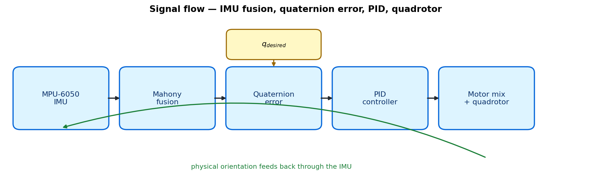
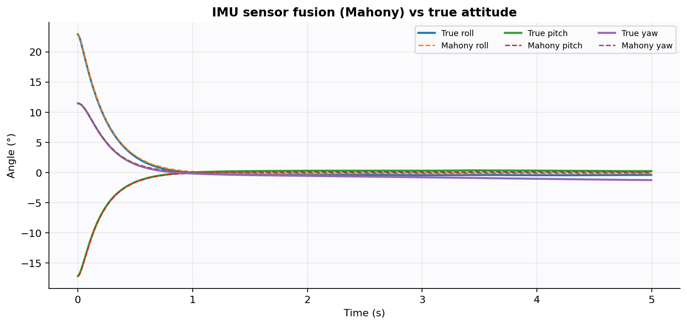
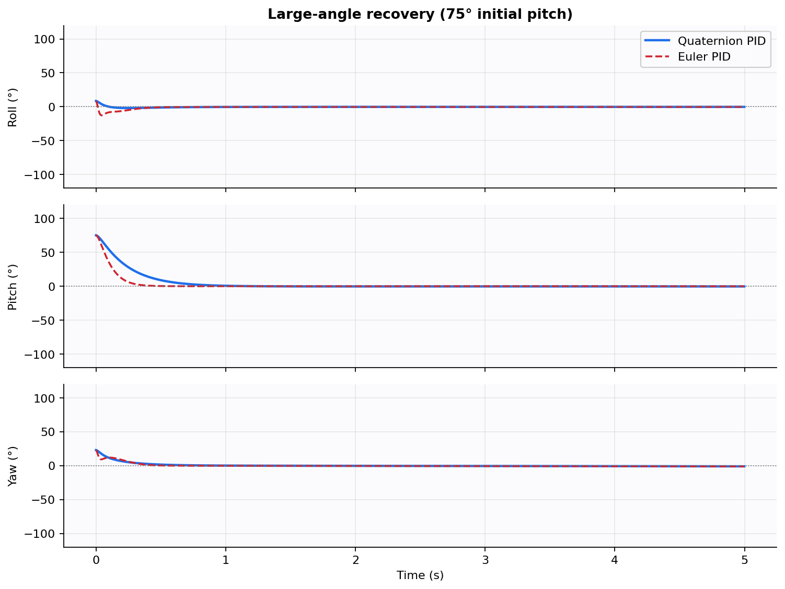
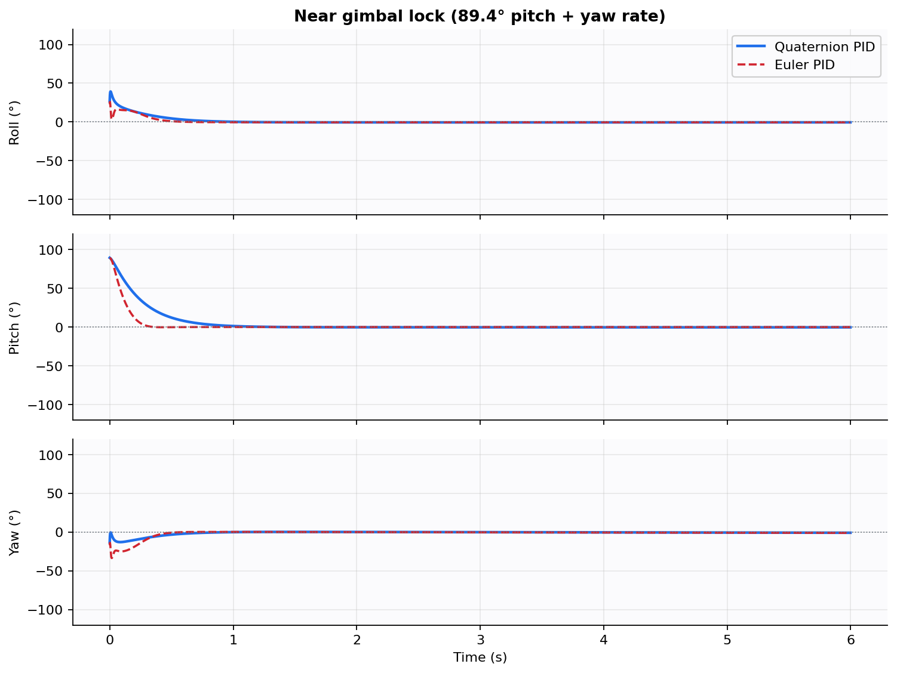
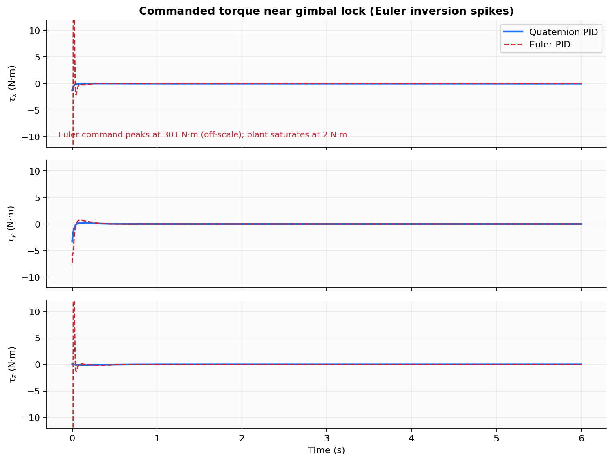
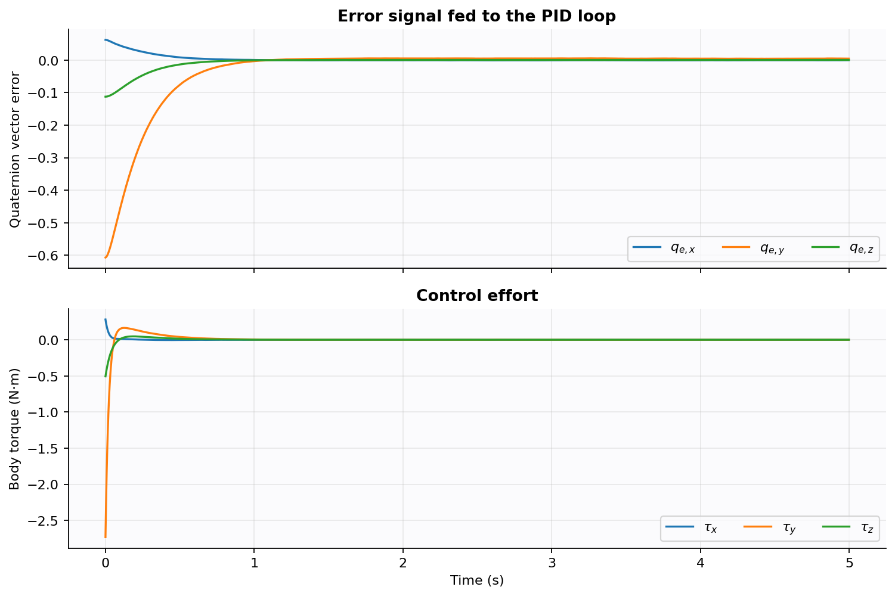
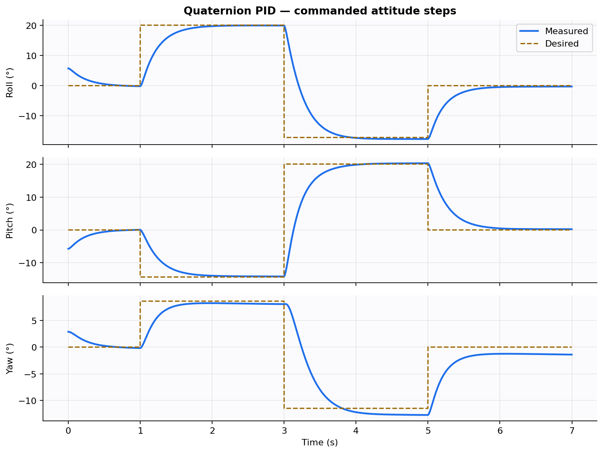
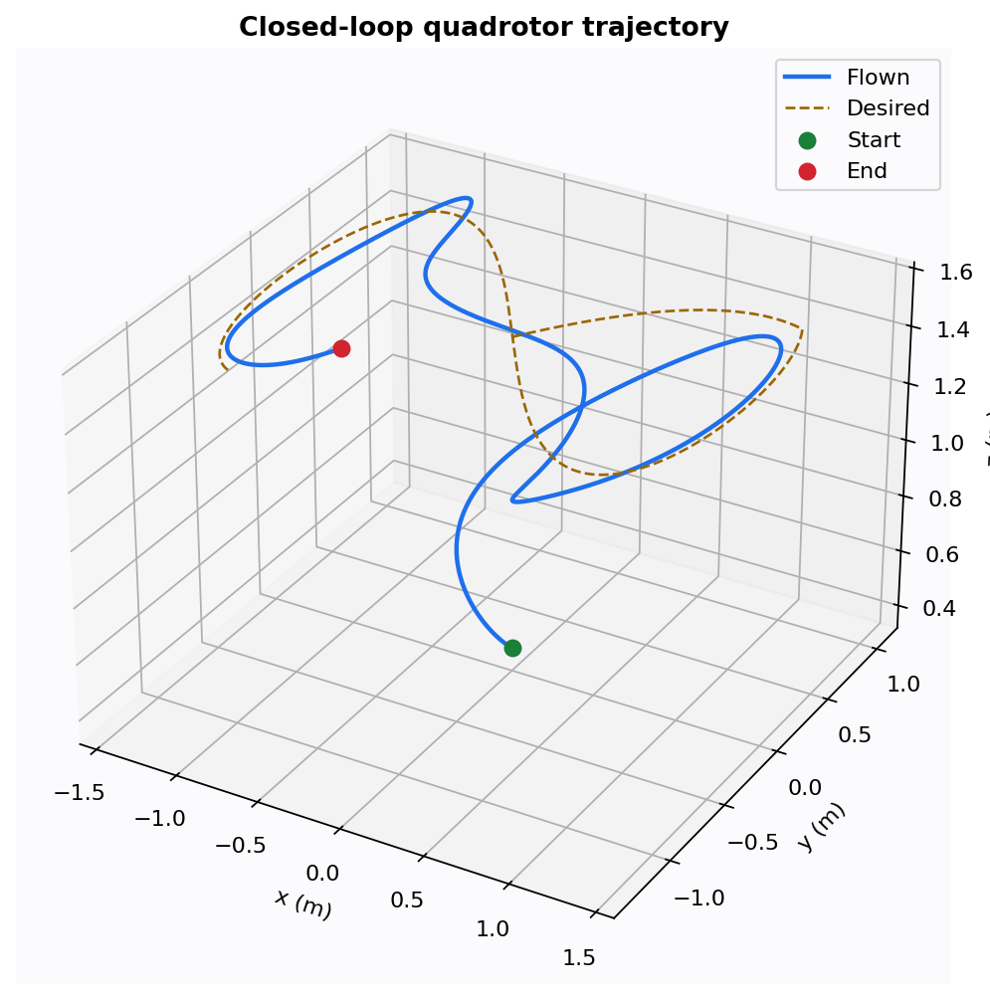
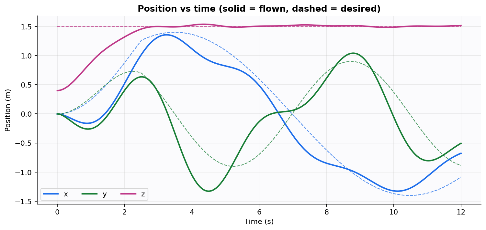
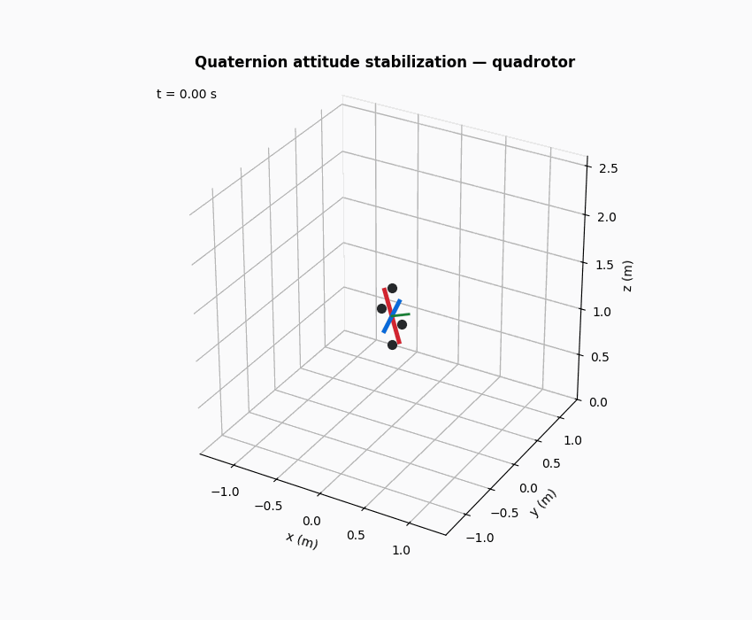

Undergraduate control project · 2026
Quaternion-Based Drone
Attitude Stabilization
IMU sensor fusion + quaternion error + PID, on a 6-DOF quadrotor simulation.
Adapted from Shevidi & Hashim, arXiv:2407.01275 (2024)
Keeping the quaternion idea, replacing sliding mode with a lab-tunable PID.
01 · Problem
A drone has to know which way it is pointing
Euler angles (roll, pitch, yaw)
Easy to picture. Near 90° pitch, roll and yaw describe the same rotation. The mapping becomes singular — gimbal lock.
Breaks in aggressive recovery
Unit quaternions
Four numbers, no preferred axis, no singular orientation. The paper uses this for the entire attitude loop.
Singularity-free
02 · Paper vs this project
Same geometry, simpler controller
Shevidi & Hashim 2024
- Quaternion state and error
- Adaptive backstepping (position)
- Adaptive fast terminal SMC (attitude)
- Finite-time proofs, chattering analysis
This build
- Same quaternion state and error
- Mahony filter on a simulated MPU-6050
- PID on the vector part of \(q_e\)
- 6-DOF quadrotor + presentation plots
03 · Architecture
Closed-loop signal flow

IMU → Mahony quaternion → error vs desired attitude → PID torques → motors → physical plant → IMU again.
04 · Mathematics
Orientation as a unit quaternion
q = [q₀, q₁, q₂, q₃], q₀² + q₁² + q₂² + q₃² = 1
q̇ = ½ q ⊗ [0, ω] ← gyroscope integration
On its own this drifts. The accelerometer’s measurement of gravity is used to correct ω before integration (Mahony / Madgwick).
05 · Sensor fusion
Mahony correction of gyro drift
e = vacc × v̂est
ωcorrected = ω + Kp,f e + Ki,f ∫ e dt

06 · Control law
Quaternion error into a PID
qe = qdesired ⊗ qcurrent−1
e(t) = qe,v(t) → u = Kp e + Ki ∫e − Kd ω
When the vehicle is on target, qe = [1, 0, 0, 0]. The vector part behaves like a rotation vector for small errors — exactly what a PID expects.
07 · Plant
6-DOF quadrotor (ENU, z-up)
v̇ = g + R(q) [0, 0, F/m]
J ω̇ = −ω × (Jω) + τ mi = mhover + mix(τ)
Mass
1.0 kg lab-scale frame
Inertia
diag(0.012, 0.012, 0.021)
IMU
Gyro bias + accel noise
08 · Experiment 1
Large-angle recovery — 75° pitch

09 · Experiment 2
Near gimbal lock — 89.4° pitch


The Euler kinematic Jacobian loses rank at 90° pitch, so the inverted torque command saturates. Quaternion PID never builds that matrix.
10 · Inner loop
Error signal and control effort

11 · Tracking
Step attitude commands

12 · 6-DOF mission
Figure-eight hover under wind gusts


13 · Demo
Run these during the talk
python -m simulation.live_demo — matplotlib 3D recovery + mission
Open the interactive 3D viewer (uses the JSON dumped by run_all)
GIFs also sit in results/animations/ if a live window is risky.

14 · Hardware path
From simulation to a table-top rig
- MPU-6050 → same Mahony update already in
src/mahony.py
- Gimbal: servo angle θ = θ₀ + u(t)
- Quadrotor test stand:
src/mixer.py across four ESCs
- Tune Kp first, then Kd for damping, then a small Ki
15 · Takeaways
What this project shows
- Quaternions remove the singularity that Euler-based PID hits near 90° pitch.
- The paper’s geometry is usable without sliding-mode machinery.
- Mahony fusion keeps a noisy IMU good enough to close the loop.
- The same controller maps onto a gimbal or a quadrotor mixer.
[1] Shevidi & Hashim, arXiv:2407.01275, 2024.